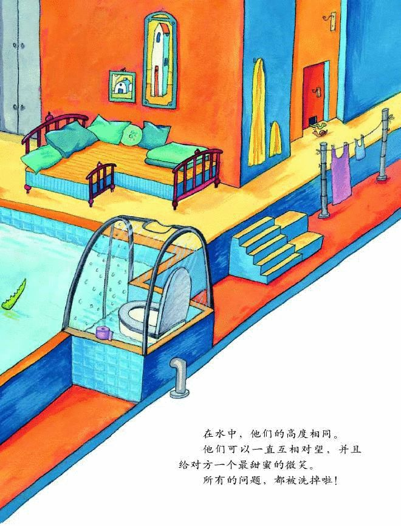
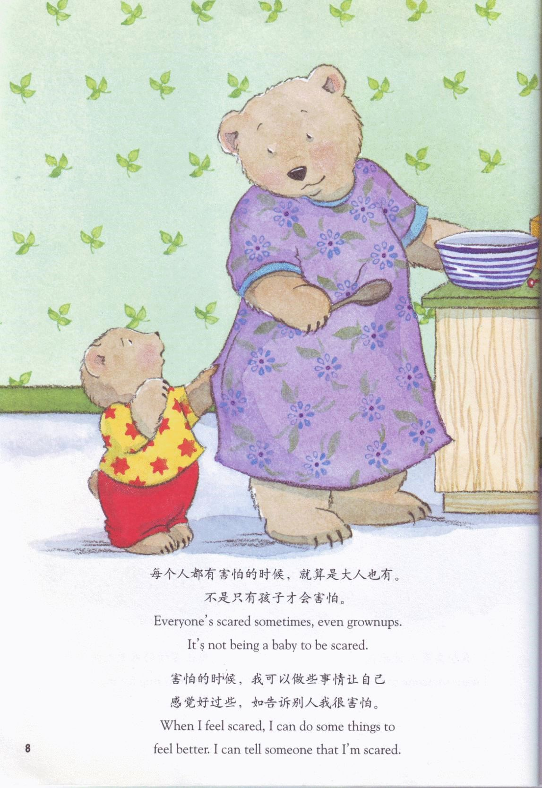
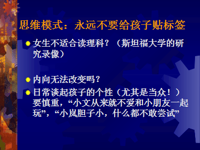

那我看一下成长观还有没有一些其他的表现。比如说孩子说他跟其他小伙伴合不来，家长可以怎么引导呢？
我来快速的讲述这个绘本，讲述的是长颈鹿和鳄鱼是一对恋人，住在一起发生了一些矛盾相爱的人总是希望住在一起。搬到鳄鱼的小房家有什么问题呢？经常碰到头，伸出头就伸出门外去了，那如果搬到长颈鹿家呢，也是有很多问题。桌子太高了爬不上去，换一把高一点的椅子又爬不上去，换一个矮一点的桌子，长颈鹿又太累了，还有很多问题，门把手太高了，楼梯太陡了，更糟糕的是马桶太大了，很危险。他们就想怎么可以造成一个适合他们两个人的房子。
我们看一下，他们造的房子。床设计很合理。有两个门，一高一矮。但是从心里上有很合理。

这个故事是像孩子传递了一种人际交往成长型的模式。连长颈鹿跟鳄鱼这种相差很多的恋人都可以通过努力跟自己聪明才智克服面临的问题。那我们普通的这些人跟其他小伙伴门，发生的一些争执，不愉快，生活习惯的不同，都可以使解决的。
情绪调节也有这种模式。这种模式适应面很广。
胆小害怕是天生难以改变的

小熊太害怕了，但是他妈妈跟他说了一句话，每个人都有害怕的时候，就算大人也有，不是只有孩子才会害怕。
这句话很重要。不管孩子有任何负面情绪，我们都要用这种模式。举个例子，孩子从学校回来说他嫉妒某个同学成绩比自己好，家长怎么说呢？通常我们会说，怎么可以嫉妒别人呢，大家都是好伙伴，你要向他学习啊。孩子在跟我们谈他内心感受的时候，我们都要接纳孩子情绪，嫉妒啊，羞愧啊，我们可以模仿前面的回答说，妈妈理解你的感觉，最好告诉他，爸爸妈妈上学的时候也有这种情绪，让她觉得嫉妒本身并不是可耻的，大家可以扪心自问，我们都没有嫉妒过别人吗？我们否定孩子或者不让他嫉妒，他这种情绪并没有消失，还是存在，只不过下次再也不敢跟你讲了。因为他知道他再跟你讲会受到你的批评。但是他的嫉妒并没有消失。请大家记得接纳他，甚至允许这种感受事合理。你可以后来告诉他爸爸妈妈也是这样，但是后来通过自己的努力赶上来了。所有的成长观都是一样的，首先是充分的接纳，归属感永远是第一位的。然后再鼓励他去进步，再去超越自己。
大家理解一下在情绪方面也有成长观，而且是完全适用的。只有这样子孩子跟父母之间才能无话不谈。大家要理解对孩子情绪的接纳并不代表是赞同他。你接纳他嫉妒的情绪，但是告诉他可以通过努力去改变，因为嫉妒让你认识到你与别人的差距，但是你可以通过提高自己而不是贬低别人，这样就可以不再嫉妒别人了。 我们来看一下思维模式

请大家注意一下，不要给孩子贴标签，如果孩子很内向，家长要更注意一下，不要在亲朋好友之间这样说，这样会让孩子会更加觉得自己是这个样子，这样会让他更难改变。斯坦福大学的一个研究，女生不适合读理科，我们通过一个小视频可以看到，智力测验的创始人认碧娜为智力是可以通过努力改变的。大家对于智力一直都有一个误解就是智力是固定不变的。对于性别也有一些刻板印象，比如认为女性在数学科学方面表现较差，我们会发现如果你一再强调这个，女性的表现就真的表现差了。这也就是我们刚才说的，就是千万不要给孩子贴任何的标签。
我们接下来来讨论一下怎么给孩子鼓励，我们刚才说过，要给孩子必要但尽可能少的帮助，如果他可以做到的话，我们就可以放手。就像照片里的小孩一样，他刚刚一周岁，他很想滑滑梯，但是不敢，他爸爸只给他一根手指头，这个时候真的滑下来，这个是他获得的自信心，因为是他得到很少帮助情况下自己做到的这个时候这种小自信是属于他的。如果他是在你双手抱着滑下来的话，那么下次他还是会依赖你抱他才敢下来。所以如果说他敢于去努力，去尝试的时候，我们要放手，要给他必要但尽可能少的帮助，当然这必要的帮助也是需要的。